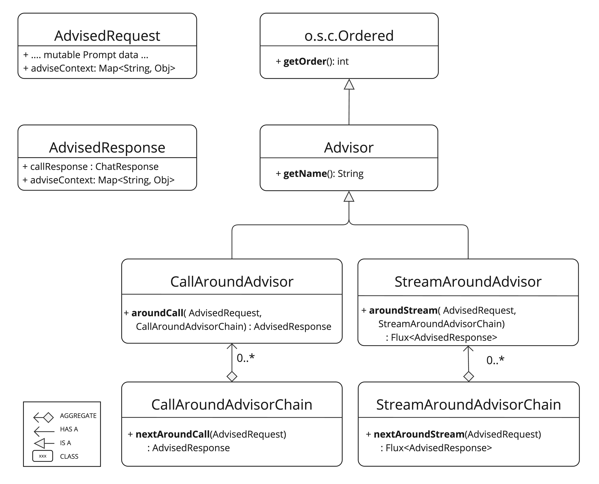

顾问 API #
Spring AI Advisors API 提供了一种灵活而强大的方法来拦截、修改和增强 Spring 应用程序中的 AI 驱动的交互。通过利用 Advisors API，开发人员可以创建更复杂、可重用和可维护的 AI 组件。
主要优势包括封装重复的生成式 AI 模式、转换发送到大型语言模型 （LLM） 和从大型语言模型 （LLM） 发送的数据，以及提供跨各种模型和用例的可移植性。
您可以使用 [
ChatClient API](chatclient.html#_advisor_configuration_in_chatclient) 配置现有顾问，如以下示例所示：
建议在构建时使用 builder 的 defaultAdvisors（） 方法注册 advisor。
顾问还参与可观测性堆栈，因此您可以查看与其执行相关的指标和跟踪。
核心组件 #
该 API 由用于非流式处理场景的 CallAroundAdvisor 和 CallAroundAdvisorChain 以及用于流式处理场景的 StreamAroundAdvisor 和 StreamAroundAdvisorChain 组成。它还包括 AdvisedRequest 来表示未密封的 Prompt 请求，AdvisedResponse 用于聊天完成响应。两者都持有一个 advise-context 来在整个 advisor 链中共享状态。

nextAroundCall（） 和 nextAroundStream（） 是关键的 advisor 方法，通常执行一些作，例如检查未密封的 Prompt 数据、自定义和扩充 Prompt 数据、调用 advisor 链中的下一个实体、选择性地阻止请求、检查聊天完成响应以及引发异常以指示处理错误。
此外，getOrder（） 方法确定链中的 advisor 顺序，而 getName（） 提供唯一的 advisor 名称。
由 Spring AI 框架创建的 Advisor 链允许按顺序调用多个 advisor，这些 advisor 按其 getOrder（） 值排序。首先执行较低的值。自动添加的最后一个 advisor 将请求发送到 LLM。
以程图说明了顾问链和聊天模型之间的交互：

顾问订单 #
链中 advisor 的执行顺序由 getOrder（） 方法决定。需要了解的要点：
- 首先执行订单值较低的顾问。
- advisor 链以堆栈的形式运行：
- 链中的第一个 advisor 是第一个处理请求的人。
- 它也是最后一个处理响应的服务器。
- 要控制执行顺序：
- 将 order close 设置为 Ordered.HIGHEST_PRECEDENCE 以确保 advisor 在链中首先执行（首先用于请求处理，最后用于响应处理）。
- 将 order close 设置为 Ordered.LOWEST_PRECEDENCE 以确保 advisor 在链中最后执行（last 用于请求处理，first 用于响应处理）。
- 较高的值被解释为较低的优先级。
- 如果多个 advisor 具有相同的订单价值，则不能保证他们的执行顺序。
提醒一下，以下是 Spring
Ordered接口的语义：
public interface Ordered {
/**
* Constant for the highest precedence value.
* @see java.lang.Integer#MIN_VALUE
*/
int HIGHEST_PRECEDENCE = Integer.MIN_VALUE;
/**
* Constant for the lowest precedence value.
* @see java.lang.Integer#MAX_VALUE
*/
int LOWEST_PRECEDENCE = Integer.MAX_VALUE;
/**
* Get the order value of this object.
* <p>Higher values are interpreted as lower priority. As a consequence,
* the object with the lowest value has the highest priority (somewhat
* analogous to Servlet {@code load-on-startup} values).
* <p>Same order values will result in arbitrary sort positions for the
* affected objects.
* @return the order value
* @see #HIGHEST_PRECEDENCE
* @see #LOWEST_PRECEDENCE
*/
int getOrder();
}
API 概述 #
主要的 Advisor 界面位于包 org.springframework.ai.chat.client.advisor.api 中。以下是您在创建自己的 advisor 时会遇到的关键界面：
public interface Advisor extends Ordered {
String getName();
}
同步和反应式 Advisor 的两个子接口是
public interface CallAroundAdvisor extends Advisor {
/**
* Around advice that wraps the ChatModel#call(Prompt) method.
* @param advisedRequest the advised request
* @param chain the advisor chain
* @return the response
*/
AdvisedResponse aroundCall(AdvisedRequest advisedRequest, CallAroundAdvisorChain chain);
}
和
public interface StreamAroundAdvisor extends Advisor {
/**
* Around advice that wraps the invocation of the advised request.
* @param advisedRequest the advised request
* @param chain the chain of advisors to execute
* @return the result of the advised request
*/
Flux<AdvisedResponse> aroundStream(AdvisedRequest advisedRequest, StreamAroundAdvisorChain chain);
}
要继续 Advice 链，请在 Advice 实现中使用 CallAroundAdvisorChain 和 StreamAroundAdvisorChain：
这些接口包括
public interface CallAroundAdvisorChain {
AdvisedResponse nextAroundCall(AdvisedRequest advisedRequest);
}
和
public interface StreamAroundAdvisorChain {
Flux<AdvisedResponse> nextAroundStream(AdvisedRequest advisedRequest);
}
实施 Advisor #
要创建 advisor，请实现 CallAroundAdvisor 或 StreamAroundAdvisor （或两者）。要实现的关键方法是 nextAroundCall（）（ 用于非流式处理）或 nextAroundStream（）（ 用于流式处理顾问）。
例子 #
我们将提供一些动手实践示例来说明如何实施 advisor 来观察和增强用例。
日志记录顾问 #
我们可以实现一个简单的日志记录 advisor，在调用链中的下一个 advisor 之前记录 AdvisedRequest，并在调用链中的下一个 advisor 之后记录 AdvisedResponse。请注意，advisor 仅观察请求和响应，不会修改它们。此实现支持非流式处理和流式处理方案。
public class SimpleLoggerAdvisor implements CallAroundAdvisor, StreamAroundAdvisor {
private static final Logger logger = LoggerFactory.getLogger(SimpleLoggerAdvisor.class);
@Override
public String getName() { (1)
return this.getClass().getSimpleName();
}
@Override
public int getOrder() { (2)
return 0;
}
@Override
public AdvisedResponse aroundCall(AdvisedRequest advisedRequest, CallAroundAdvisorChain chain) {
logger.debug("BEFORE: {}", advisedRequest);
AdvisedResponse advisedResponse = chain.nextAroundCall(advisedRequest);
logger.debug("AFTER: {}", advisedResponse);
return advisedResponse;
}
@Override
public Flux<AdvisedResponse> aroundStream(AdvisedRequest advisedRequest, StreamAroundAdvisorChain chain) {
logger.debug("BEFORE: {}", advisedRequest);
Flux<AdvisedResponse> advisedResponses = chain.nextAroundStream(advisedRequest);
return new MessageAggregator().aggregateAdvisedResponse(advisedResponses,
advisedResponse -> logger.debug("AFTER: {}", advisedResponse)); (3)
}
}
重读 （Re2） 顾问 #
“[ Re-Reading Improves Reasoning in Large Language Models]( https://arxiv.org/pdf/2309.06275)” 一文介绍了一种称为 Re-Reading （Re2） 的技术，该技术可以提高大型语言模型的推理能力。Re2 技术需要像这样扩充输入提示： 实现将 Re2 技术应用于用户输入查询的 advisor 可以像这样完成：
public class ReReadingAdvisor implements CallAroundAdvisor, StreamAroundAdvisor {
private AdvisedRequest before(AdvisedRequest advisedRequest) { (1)
Map<String, Object> advisedUserParams = new HashMap<>(advisedRequest.userParams());
advisedUserParams.put("re2_input_query", advisedRequest.userText());
return AdvisedRequest.from(advisedRequest)
.userText("""
{re2_input_query}
Read the question again: {re2_input_query}
""")
.userParams(advisedUserParams)
.build();
}
@Override
public AdvisedResponse aroundCall(AdvisedRequest advisedRequest, CallAroundAdvisorChain chain) { (2)
return chain.nextAroundCall(this.before(advisedRequest));
}
@Override
public Flux<AdvisedResponse> aroundStream(AdvisedRequest advisedRequest, StreamAroundAdvisorChain chain) { (3)
return chain.nextAroundStream(this.before(advisedRequest));
}
@Override
public int getOrder() { (4)
return 0;
}
@Override
public String getName() { (5)
return this.getClass().getSimpleName();
}
}
Spring AI 内置顾问程序 #
Spring AI 框架提供了几个内置的顾问程序来增强您的 AI 交互。以下是可用顾问的概述：
聊天记忆顾问 #
这些顾问在聊天内存存储中管理对话历史记录：
问题解答顾问 #
内容安全顾问 #
流式处理与非流式处理 #

- 非流式处理顾问处理完整的请求和响应。
- Streaming advisor 使用反应式编程概念（例如，用于响应的 Flux）将请求和响应作为连续流处理。
@Override
public Flux<AdvisedResponse> aroundStream(AdvisedRequest advisedRequest, StreamAroundAdvisorChain chain) {
return Mono.just(advisedRequest)
.publishOn(Schedulers.boundedElastic())
.map(request -> {
// This can be executed by blocking and non-blocking Threads.
// Advisor before next section
})
.flatMapMany(request -> chain.nextAroundStream(request))
.map(response -> {
// Advisor after next section
});
}
最佳实践 #
向后兼容性 #
重大 API 更改 #
Spring AI Advisor 链从 1.0 M2 版本到 1.0 M3 发生了重大变化。以下是主要修改：
Advisor 接口 #
- 在 1.0 M2 中，有单独的 RequestAdvisor 和 ResponseAdvisor 接口。
- RequestAdvisor 在 ChatModel.call 和 ChatModel.stream 方法之前调用。
- ResponseAdvisor 是在这些方法之后调用的。
- 在 1.0 M3 中，这些接口已被替换为：
- StreamResponseMode（以前是 ResponseAdvisor 的一部分）已被删除。
上下文映射处理 #
- 在 1.0 m2 中：
- 上下文映射是一个单独的方法参数。
- 地图是可变的，并沿着链传递。
- 在 1.0 m3 中：
- 上下文映射现在是 AdvisedRequest 和 AdvisedResponse 记录的一部分。
- map 是不可变的。
- 要更新上下文，请使用 updateContext 方法，该方法使用更新的内容创建一个新的不可修改的映射。 在 1.0 M3 中更新上下文的示例：
@Override
public AdvisedResponse aroundCall(AdvisedRequest advisedRequest, CallAroundAdvisorChain chain) {
this.advisedRequest = advisedRequest.updateContext(context -> {
context.put("aroundCallBefore" + getName(), "AROUND_CALL_BEFORE " + getName()); // Add multiple key-value pairs
context.put("lastBefore", getName()); // Add a single key-value pair
return context;
});
// Method implementation continues...
}